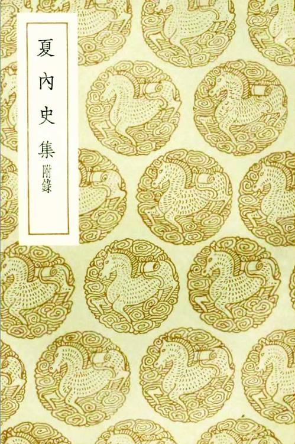

我们从他祖父这一辈讲起。
夏家“世为华亭人”[5]，是地道的华亭人。而华亭又是哪儿？便是如今上海松江。明代的时候，有松江府，下辖华亭等数县，府治便在华亭。民国初，华亭县改名松江县，华亭古名从此消失。松江另有一个古称，叫“云间”，那时诗文中常出现“云间”的地名，所以也先一并交待。在今日上海，松江已算郊县，可倒退二百年刚好得颠倒过来，松江才是这一带的中心、文人物的渊薮，特别是明末，松江文气之盛，海内闻名。
从前，夏家在当地并不突出。完淳的祖父讳时正，字行之，别号方余，后辈都尊他“方余先生”。幼年夏时正很聪慧，学业出类拔萃，童子试名列第一，但不知怎的，后来功名一直不顺。陈子龙所写传记说：“久困省试，则刻意为古文词、诗歌，其才浩漫，纵横变合，不局局于绳墨。”[6]省试，即考取举人之乡试，夏时正一再败北，止步于生员。久之，便死了心。所谓“刻意为古文词、诗歌”，就是不再钻研应时的八股制艺，转而听凭所好，写作古文和诗歌。这其实是科场失意的表现。
方余先生自己功名不顺，教子却大获成功。他有二子，长子之旭没能超过他，也到诸生为止，次子允彝却不但考取举人，还终于登了进士。他的教子，颇有“魔鬼”的况味：
先生严责课之。夕不奏文，即弗授餐，或不当意，稿必三四易，常中夜父子枵然相对，卒弗去也。[7]
布置的文章不完成，就不给饭吃；就算完成，倘不满意，也得来来回回改。更绝的是，不光不让儿子吃饭，自己也陪着饿肚子，父子们经常大半夜相向而坐，饥肠辘辘，纹丝不动。
夏时正活了六十八岁，不算高寿，却是从他算起祖孙三代男性家庭成员唯一善终的人。
老二夏允彝，亦即完淳的父亲，是明末士林极具影响的人物。陈子龙说：“余自为童子时，长乐君以举于乡，有盛誉。”夏允彝曾在福建长乐做知县，所以称他“长乐君”。夏允彝中举在万历四十六年（1618），而陈子龙生于万历三十六年（1608），是时年方十岁，故云自己还是“童子”。夏的中举轰动闾里，他留有很深印象。可是，足足过了十九年，到崇祯十年（1637），夏允彝才成为进士。会试、殿试在乡试的翌年举行，每三年一次，据此可推算出，他足足考了六轮。陈子龙也是这年举的进士，竟然做了同年兄弟。当时，夏四十一岁，陈二十九岁。
然后，夏允彝就去做了长乐县的知县，政绩很好，年终吏部考核中被定为全国优秀县长。张岱述其事：
摘伏如神，旁邑有疑狱不能决，上官多下长乐令决之。冢宰建德郑公，荐天下廉能吏七人，以公为首。召见，将特擢，以丁内艰归，未及用。[8]
侯玄涵《吏部夏瑗公传》亦同：
五年，邑大治。癸未，冢宰上计，举天下廉卓第一，上每朝群臣，咨天下廉吏，大学士方岳贡首以公名进，上颔焉若素知者，书公名御屏，将膺殊命，会丁母丧归。[9]
都说他考评第一，引起崇祯皇帝注意，将委重用，事因丧母服制而寝。
不光官声这么好，他在文化界的地位，更被推重，这是因为他和陈子龙一道，创办了明末重要的思想团体“几社”：
是时东林方讲学苏州，高才生张溥、杨廷枢等慕之，结文会名曰复社，允彝与同邑陈子龙、何刚、徐孚远、王光承辈，亦结几社相应和，名重海内。[10]
按以上所述，几社创建是受复社影响且是对它的响应，源起大概如此。但后人常把它们视为各自两个社团，而不知崇祯二年（1629）经尹山大会已统一为一个组织。眉史氏(沈眉史)《复社纪略》：
是时江北匡社、中洲端社、松江几社、莱阳邑社、浙东超社、浙西庄社、黄州质社，与江南应社，各分坛坫，天如（张溥）乃合诸社为一，而为之立规条，定课程……因名曰“复社”……又于各郡邑中推择一人为长，司纠弹要约，往来传置。[11]
据此来看，“复社”名称的意思，就取自“合并各社”。照沈眉史后面开列的名单，松江府社员共九人，而夏允彝列其首，可能他就是“于各郡邑中推择一人为长”而产生的松江府复社之长。
吴伟业也说：
初，先生（指张溥，吴受业于他）起里中，诸老生颇共非笑其业以为怪。一时同志：苏州曰杨维斗廷枢，曰徐九一汧，松江曰夏彝仲允彝，曰陈卧子子龙；而同里最亲善曰张受先采，读书先生七录斋……乃与燕赵卫之贤者为文言志，申要约而后去。[12]
与沈眉史所述乃同一事，即各地思想社团达成统一组织的“尹山大会”，而夏允彝和陈子龙作为几社代表参与了这一合并过程。
人们一向以为，在中国，政党政治一则是近代以降始有，二来为西方输入之舶来品。这两个知识，并为错误。中国自万历末期起已有政党政治，此无待置疑。东林与阉党的惨烈斗争，有很突出的党派色彩，双方虽各不承认党派之名——“黨”这个字，从黑，古时候不是好字眼——但又各视对方为“黨”，而在自己阵营内部都以明确的意识抱为同志。整个明末，万历、泰昌、天启、崇祯、弘光五朝，政治已完全党派化，除了党派政治再无其他形式。其中，万历末为党派政治形成期，泰昌至天启初东林党主政，天启四年汪文言案标志着魏党上位，崇祯元年魏党垮台、东林重新上台，甲申国变后朱由崧即位、魏党残余在南京夺回大权。而政党政治在形态上的发展，也很明显。初，东林有政党之实，但尚无明确组织形态，而十几年下来，党派政治的事实却已然培育出了自觉的党派意识，从而有崇、弘间风起云涌的民间结社运动。这些社团虽往往以思想、学术为标榜，真正指向却无疑都在政治，目的是凭借思想认同，结成统一诉求的政治力量，最终干预社会和现实。这是以往东林的斗争所指明的方向，但比东林更进一步的是，后起的年轻一代开始谋求组织化，懂得组织形态的重要。复社所谓“立规条，定课程”，所谓“为文言志，申要约”，其实就是今天之“党章”，而“于各郡邑中推择一人为长，司纠弹要约，往来传置”，则于具体组织层面求内部秩序、领导系统的严密建设。故而，复社完全可视为中国历史上第一个完整意义的政党；其作为政党组织，已不惟有其实，亦略具其形。它于崇祯二年、三年、五年，连续举行三次“大会”（尹山大会、金陵大会、虎丘大会），相当于后世党代会；并在南京领导、实施了统一的政治行动——“防乱揭帖”倒阮事件；又在崇祯死国之后，就新君选定拥戴事宜，与东林大佬合谋运作……凡此种种，非政党则不足以言之。
作为复社骨干，夏允彝自可视为我国较早的政党活动家。“北都变闻，恸哭累日……扁舟渡江，走谒尚书史可法，与谋兴复，闻福王立，乃还。”此行，无疑是含着党务色彩的。嗣后，也因此被马、阮揪住不放，兴师问罪：

《夏内史集》
商务印书馆民国二十八年出版，铅印，九卷。卷一、二为赋骚，卷三五古，卷四七古，卷五五律，卷六七律，卷七七绝，卷八长短句，卷九散文（包括书信），以及附录一编。
其年五月，擢吏部考功司主事，疏请终制，不赴。及马士英、阮大铖乱政……劾允彝及其同官文德翼居丧授职为非制。[13]
尽管夏允彝不曾到任，但对他的新任命明显是基于党派原因做出的安排——弘光即位前，南京政局尚握于东林之手——且为着党派利益，将礼法置于不顾了。从礼法角度，官员居丧不能出来做事。这条小辫子，马、阮可谓逮个正着。马、阮当然并非对捍卫礼法感兴趣，他们目的也在党争，礼法不过是打击政敌的武器，就像如今不同政党间经常拿道德做文章、攻击对方，却把自己打扮得很高尚一样。
对政党政治，平时我们易于或更多看到它的倾轧和不择手段，这固然是不错的。然而三四百年前，这情形亦适足表现一种政治竞争的开展，它实际是君权萎缩、政治的重心向职业政治家集团转移所致。在明代，这变化明显以嘉靖为分水岭，嘉靖是最后一个把大臣玩得团团转的皇帝，之后则颠倒过来了。而且，这还不能都用君主黯弱来解释，万历、泰昌、天启几位，固然昏碌得不理朝政，崇祯皇帝可并不那样。崇祯皇帝很积极、很勤奋，甚至到了待己苛苦的地步，很愿意让乾纲独奋的有为君主形象在自己身上重现，可他根本玩不转了，政治已经变成朝中党派游戏，没皇帝什么事，他临死前说君非亡国之君、臣皆亡国之臣，一部分就是在抱怨这种过去所不曾有的现实。
马、阮其势汹汹，咄咄逼人，亏得弘光朝转瞬即逝，不能拿夏允彝怎样。乙酉之变消息传来，他“徬徨山泽间，欲有所为。闻友人徐石麒、侯峒曾、黄淳耀、徐汧等皆死，乃以八月中赋《绝命词》，自投深渊以死”。[14]具体过程，与他有亲戚关系的侯玄涵所知更详。侯家是嘉定名门，满清制造“嘉定三屠”惨案，即由玄涵的伯父侯峒曾所领导的抗清而起，玄涵的兄长玄洵娶了夏允彝之女、夏完淳的异母姊夏淑吉为妻。他所写《吏部夏瑗公传》记述：
乙酉夏，王师南下，士大夫相率奉手板入谒，公独不可。时江南总兵吴志葵顿兵海上，同郡给事中陈子龙、孝廉徐孚远，阴与陈湖亡命起兵湖中，志葵故公门生，子龙说公以尺书招之。志葵与参将鲁之璵率舟师三千，自吴淞口入澱、泖，窥苏州。[15]
行动以失败告终，败军逃往海上。有人劝说夏允彝也“入海趋闽”。入海，是随败军一起逃走；趋闽，指投奔福建。当时唐王朱聿键由郑鸿逵、郑芝龙（郑成功父）和黄道周拥戴，在福州即了皇帝位，而夏允彝自己曾在福建为官，有很好的官声。他拒绝逃走，说：“举事一不当，而行遁求生，何以示万世”，“吾将从虞求、广成游”。虞求为徐石麒，广成为侯峒曾。他于《绝命词》中写道：
少受父训，长荷国恩，以身殉国，无愧忠贞。南都继没，犹望中兴；中兴望杳，安忍长存！[16]
这时，完淳年方十五。